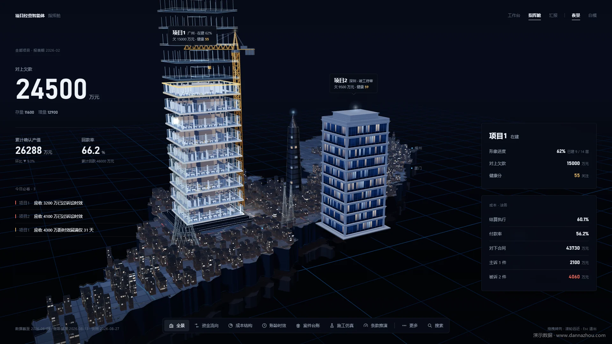
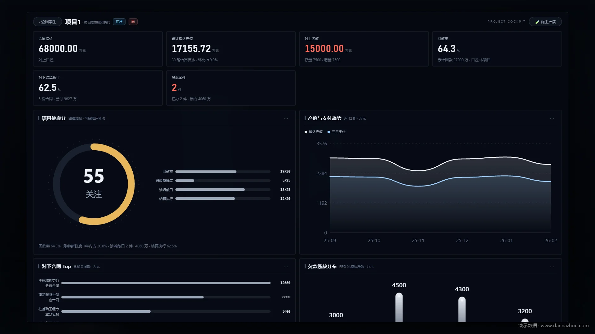
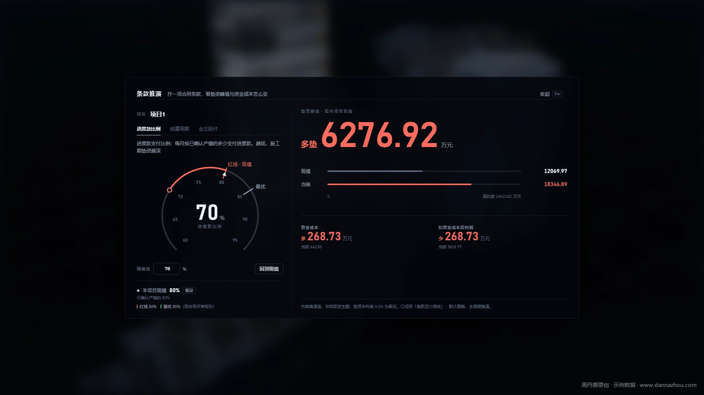
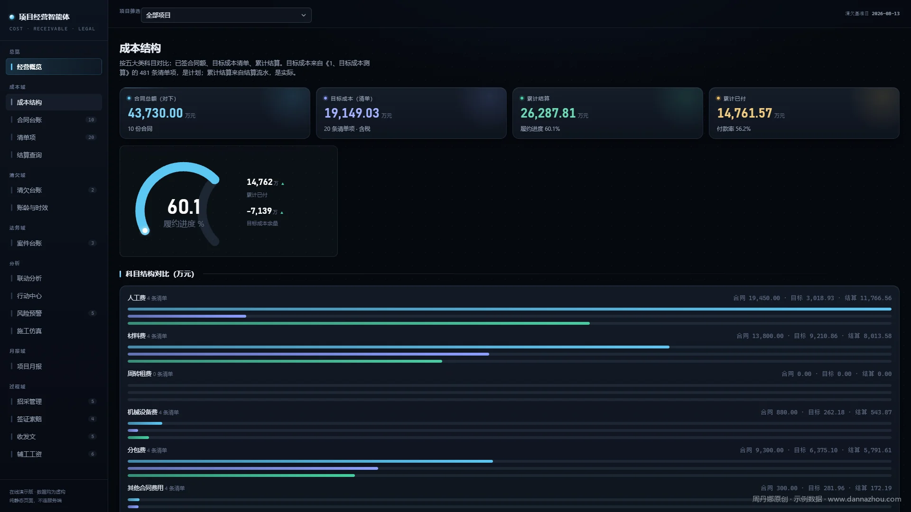
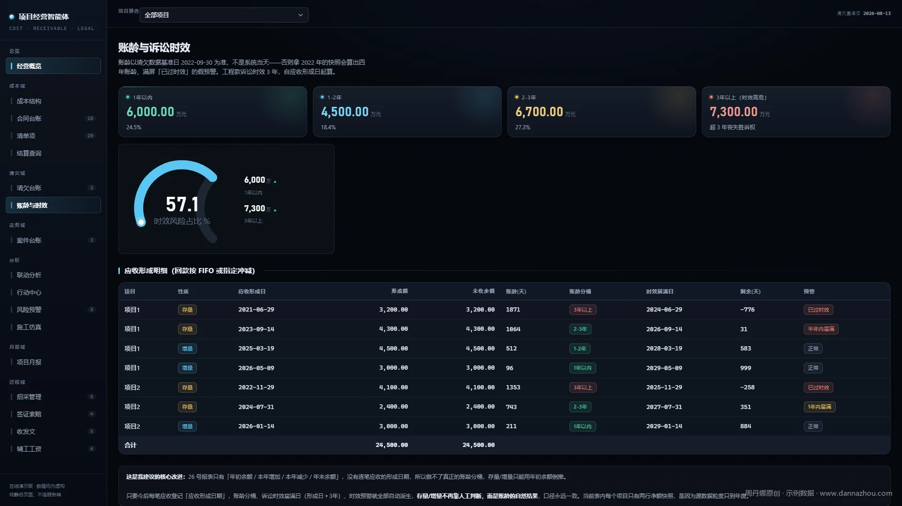
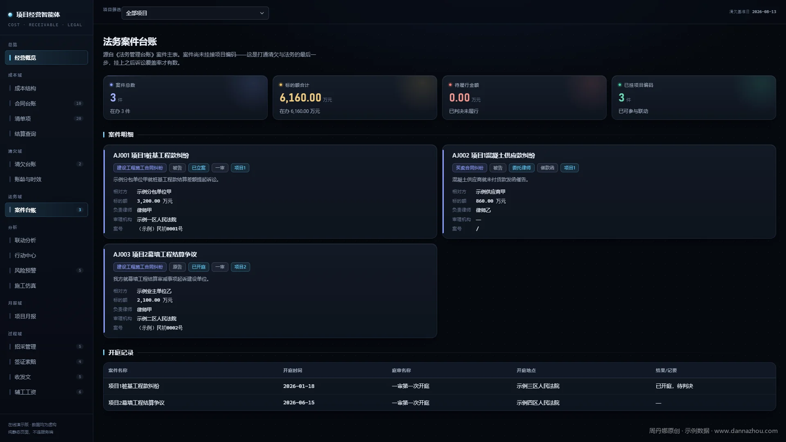

01
指挥舱
在建和竣工的项目楼体落在一张三维底图上，楼顶标着欠款和健康分。左边是对上欠款、累计确认产值、回款率和今日必看的提醒，右边是选中项目的形象进度、欠款、健康分和成本法务指标，底部一排入口通往各个专题。
以 Excel 底账为数据源，把成本、清欠、法务和过程管理汇到一处，生成项目经营看板。
画面均为演示数据，项目与单位名称为虚构。本页只供观看，不提供在线操作。








在建和竣工的项目楼体落在一张三维底图上，楼顶标着欠款和健康分。左边是对上欠款、累计确认产值、回款率和今日必看的提醒，右边是选中项目的形象进度、欠款、健康分和成本法务指标，底部一排入口通往各个专题。
把一个报表期的经营情况分章讲完，开会时逐章翻：经营总览、产值、清欠、诉讼时效、行动。图为第一章。
单个项目的合同造价、累计确认产值、对上欠款、回款率、对下结算执行和涉诉案件，下面是项目健康分、产值与支付趋势、对下合同和欠款账龄分布。
选一个项目，拧一项合同条款（进度款比例、结算周期、业主延付），对照现值看垫资峰值、资金成本和扣资金成本后的利润怎么变；表盘上标出红线和最优值。
对下合同、目标成本、累计结算和累计已付汇总在上方，下面按人工费、材料费、机械设备费、分包费等科目对比合同、目标与结算，看钱花在哪、目标成本还剩多少。
应收款按账龄分段汇总，再逐笔列出形成日期、账龄、诉讼时效届满日和剩余天数，已过时效和即将届满的标出预警。
案件逐件列出相对方、标的额、负责律师、审理机构和案号，并挂到对应的项目上；下面是开庭记录。
选定工期节奏、班组投入、对下付款比例和签证申报方式，按月推演竣工用时、项目利润、垫资峰值和对下外欠，也可以让它学习一组较优的策略。
数据来自 Excel 底账，平台只负责展示和推演，不改动底账。